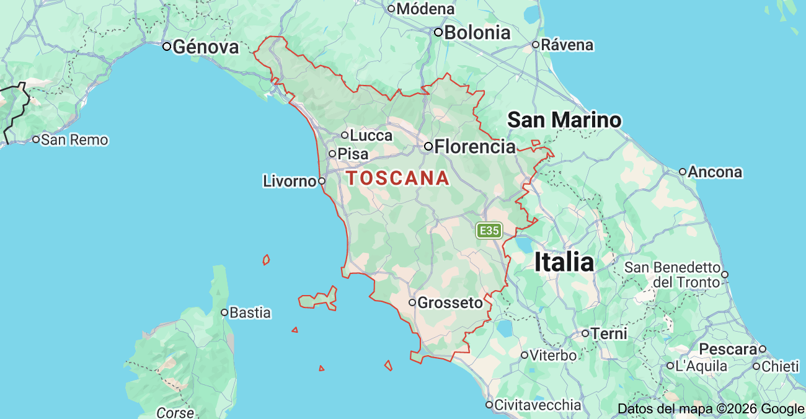
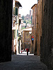

Esta es una breve crónica de mi visita a Italia. Da clic sobre las fotos miniatura para tener una vista más grande de cada fotografía. ¡Disfrútalo!
| Imagen miniatura | Lugar | Fecha y hora aprox. de la visita | Descripción | Mapa de la ubicación |
|---|---|---|---|---|
|
Pozzarello | Verano, aproximadamente a las 12:00 h. | La casa en la que nos alojamos se llamaba Pozzarello y fue construida alrededor del año 1200 como hogar del jardinero que cuidaba los terrenos del castillo aledaño. Las gruesas paredes nos mantenían agradablemente frescos adentro, a pesar del calor abrasador del medio día. Esta es la vista desde la ventana de nuestra habitación. |  |
|
El campo Toscano | Verano, aproximadamente a las 10:00 h. | Esta es la escena del camino a Montalcino (¡todos los caminos conducen a Montalcino!). Se parece mucho a la escena del camino a Sienna, y al camino hacia la tienda de comestibles. Estábamos rodeados de hermosos paisajes durante la mayor parte del viaje. | |
 |
Sienna | Verano, aproximadamente a las 14:00 h. | La ciudad más cercana a nuestra villa era Sienna, estaba a unos 30 minutos. Pasamos muchos días explorando las calles empinadas y torcidas, probando la cocina local en restaurantes al aire libre, y parando en la oscuridad y haciendo eco en las iglesias principales o Duomos para escapar del sol. | |
|
Postres | Verano, aproximadamente a las 15:00 h. | Comer es una de las grandes actividades en un viaje. Y aun mejor comer un postre. | |
|
La catedral | Verano, aproximadamente a las 11:00 h. | La religión implica lugares importantes, visita la catedral. | |
|
Lavanda | Verano, aproximadamente a las 17:00 h. | Un buen aroma magnifica la experiencia de una visita. |